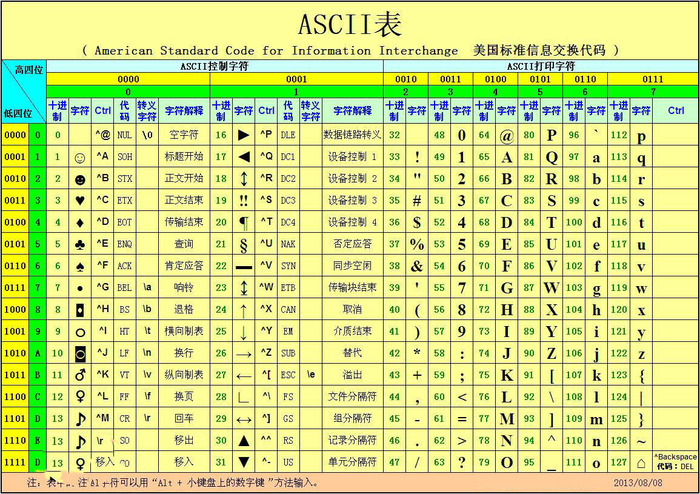
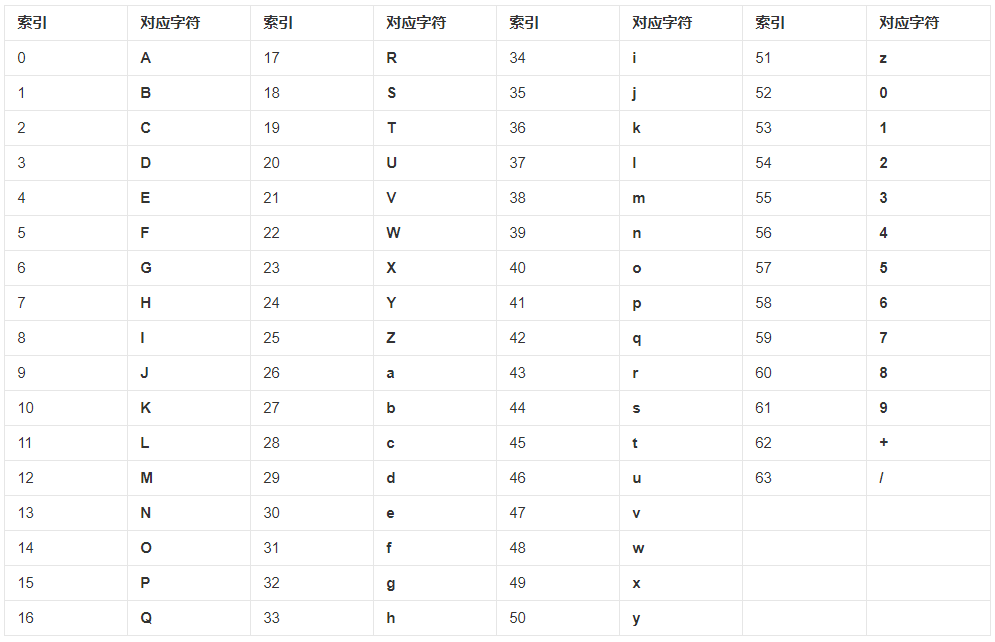

日常的学习笔记，包括 ES6、Promise、Node.js、Webpack、http 原理、Vue全家桶，后续可能还会继续更新 Typescript、Vue3 和 常见的面试题 等等。
编码的发展
我们现在常用的编码是 ASCII 编码，汉字都是使用 UTF-8 格式。
编码一般分为以下几种
- ASCII 码
- GB2312
- GBK
- GB18030 (DBCS)
- Unicode
- UTF-8 / UTF-16
- …
ASCII 码
ASCII码 的八位字节可以表现出 256 种不同的形态。
0-32 规定了特殊用途,一旦终端、打印机遇上约定好的这些字节被传过来时，就要做一些约定的动作。（如 遇上0×10, 终端就换行。遇上0×07, 终端就会发出嘟嘟嘟的声音 等。）
所有的空格、标点符号、数字、大小写字母分别用连续的字节状态表示，一直编到了第 127 号。这样计算机就可以用不同字节来存储英语的文字了。

因为计算机最早是在美国进行使用的，而他们也只使用了前 127 号。但是世界上存在那么多种语言，光是汉语就有好几万个汉字，这种编码格式显然是不太行的。
GB2312
西欧一些国家用的不是英文，所以他们使用 127 号这后的空位来保存新的字母，一直编到了最后一位 255。（不同国家表示的符号也是不同的，130 在法语编码中代表了é，在希伯来语编码中却代表了字母Gimel (ג)）
而我们国家为了表示汉字，把 127 之后的符号取消了。
一个 小于127 的字符的意义与原来相同。但两个大于 127 的字符连在一起时，就表示一个汉字。前面的一个字节（高字节）从 0xA1 到 0xF7，后面一个字节（低字节）从 0xA1 到 0xFE。这种方式可以组合出大概 (247-161)*(254-161) = 7998 多个简体汉字。
而 数学符号、日文假名 和 ASCII里原来就有的 数字、标点 和 字母 都重新编成两个字长的编码。这就是 全角字符，127 以下那些就叫半角字符。
这种汉字方案叫做 GB2312。GB2312 是对 ASCII 的 中文扩展 。
GBK
在使用过程中，发现 GB2312 还是不够用。于是便不再要求 低字节 一定是 127 之后的内码，只要第一个字节是大于 127 ，就固定表示这是一个汉字的开始。
于是又增加了近 20000 个新的汉字（包括繁体字）和符号。
GB18030 / DBCS
GBK扩成了GB18030 通称他们叫做 DBCS，增加了几千个新的少数民族的字。
在 DBCS 系列标准里，最大的特点是 两字节长的汉字字符 和 一字节长的英文字符 并存于同一套编码方案里。
就这样，各个国家都搞出了一套自己的编码标准。就导致会同时存在好多种不同的编码，互相之间不支持也不互通。
Unicode
Unicode 编码，开发人员应该并不陌生。
ISO：International Organization for Standardization ，国际标准化组织
Unicode：Universal Multiple-Octet Coded Character Set ，简称 UCS，俗称 Unicode
ISO 的国际组织废了所有的地区性编码方案，重新搞一个包括了地球上 所有文化、所有字母 和 文字 的编码。
Unicode 是一个很大的集合，现在的规模可以容纳 100多万 个符号。
ISO 组织直接规定必须用 两个字节（16位） 来表示所有的字符。ASCII 里的那些 半角字符*，Unicode 保持其原编码不变，只是将其长度由原来的 *8 位扩展为16 位，而其他文化和语言的字符则全部重新统一编码。
从 Unicode 开始，无论是半角的 英文字母，还是全角的 汉字，它们都是统一的一个字符。同时，也都是统一的 两个字节。
Unicode 在很长一段时间内无法推广，直到互联网的出现。
UTF
为解决 Unicode 如何在 网络上传输 的问题，面向传输的众多 UTF 标准出现了。
UTF编码：Universal Character Set（UCS）Transfer Format
UTF-8 就是在互联网上使用最广的一种 Unicode 的实现方式。
UTF-8 是每次以 8位 为单位进行数据传输，而 UTF-16 是每次以 16位 进行传输的。
UTF-8 是一种变长的编码方式。Unicode 一个中文字符占 2 个字节，而 UTF-8 一个中文字符占 3 个字节。
换言之，UTF 就是 Unicode 的另一种实现方式。
Base64 编码规范
Base64 是网络上最常见的用于传输 8位 字节码的编码方式之一。开发中可以替换掉路径，而且可以用于传输。
Base64 编码是从二进制到字符的过程，可用于在HTTP环境下传递较长的标识信息。采用 Base64 编码具有不可读性，需要解码后才能阅读。

我们平时会使用 encodeURIComponent() 方法将文字转换成 16进制。
转化思路
我们都知道，一个汉字 3 个字节，一个字节 8 位 。而 Base64 其实就是将一个汉字转换为 3 * 8 = 4 * 6 的格式，也就是说现在一个汉字会有 4个字节 的长度，转换后的结果会比之前大 1/3。
我们先随便输出一个汉字，并将其转换成16进制。
1 | // Buffer.from 可以将汉字转换成 16进制 |
我们可以发现，结果是 3个字节 长度的 16进制，挨个转换成 2进制。
1 | console.log((0xe8).toString(2)); // 11101000 |
再将得到的 2进制 进行拼接，并转换成 4个字节*，并在前面补 0，将其变成 *8位 二进制 。然后我们会得到下面的结果。
1 | // 11101000 10001110 10101011 |
这个结果最大是 001111，然后我们再将这个结果转换成 十进制。
1 | console.log(parseInt('00111010',2)); // 58 |
这样我们就会得到一个每位都 不大于64 的结果。
根据上面写的对应表，我们就可以推算出这个文字对应的 Base64 编码为 6I6r，也就是我们上面写的 莫 字。
把这种思路整理一下，我们就可以得到下述代码。
1 | const CHARTS = 'ABCDEFGHIJKLMNOPQRSTUVWXYZabcdefghijklmnopqrstuvwxyz0123456789+/'; |
这样就完成了我们的 Base64 的转换。
本篇文章由 莫小尚 创作，文章中如有任何问题和纰漏，欢迎您的指正与交流。
您也可以关注我的 个人站点、博客园 和 掘金，我会在文章产出后同步上传到这些平台上。
最后感谢您的支持！